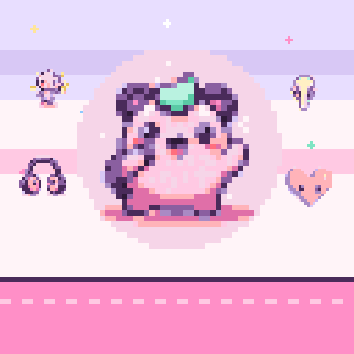
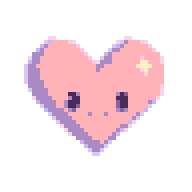
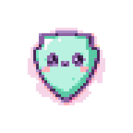
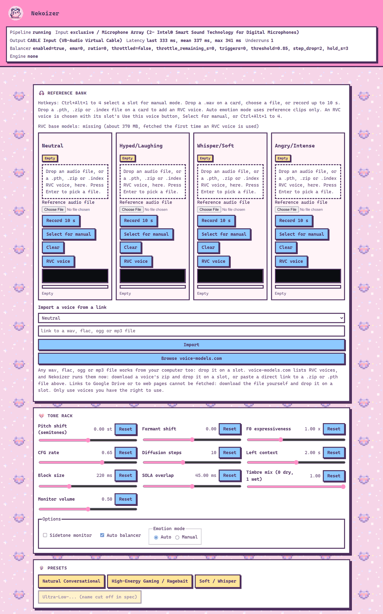
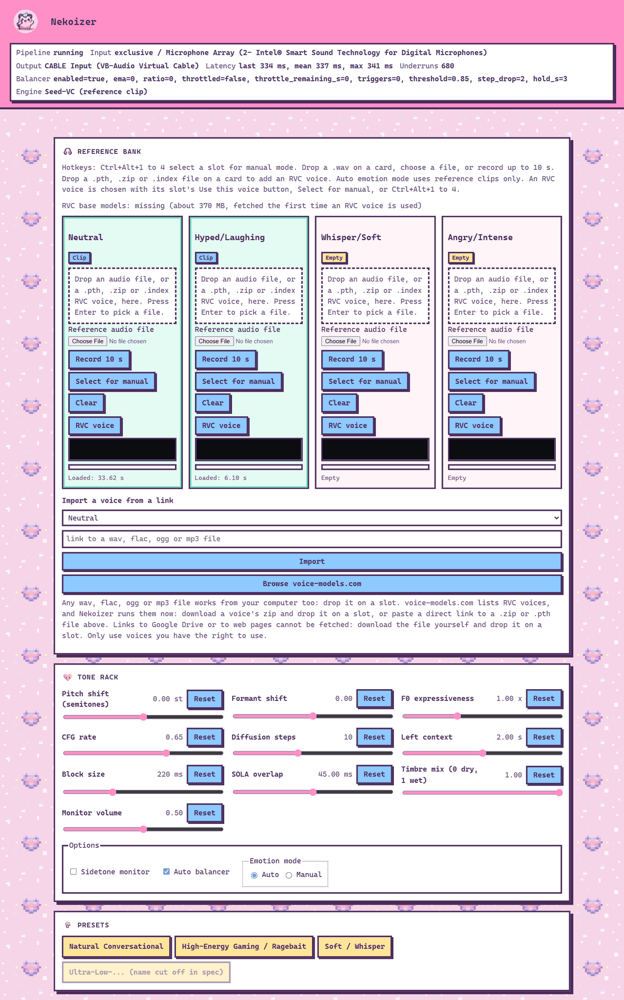
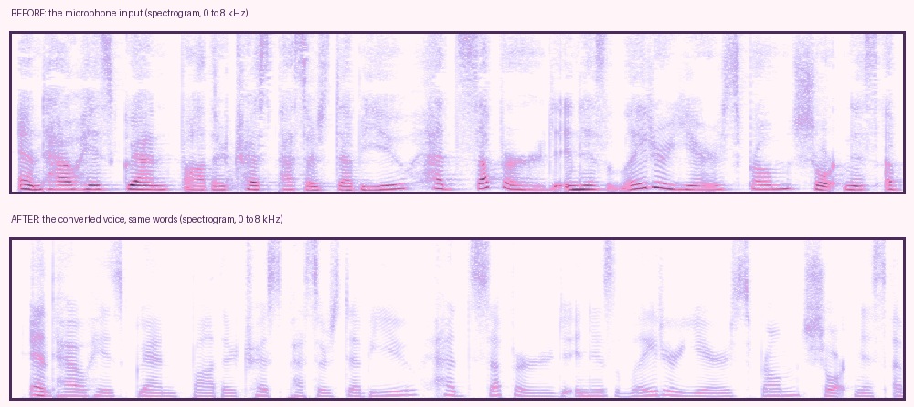
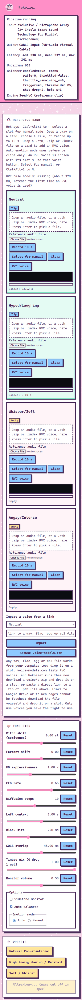
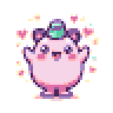

Clips and RVC voices
Drop in a wav, mp3, flac or ogg clip, or an RVC voice model (.pth or .zip), in the same bank of voice slots. Switch with Ctrl+Alt+1 to 4.
 Atterans
Atterans
Talk as someone else, live. Nekoizer turns your microphone into a different voice in real time, for Discord, games, streams and calls. It runs on your own graphics card, so your voice stays on your PC.
Download for Windows v1.0.0 · free · small installerHow it works
Free for Windows 10/11 with an NVIDIA GPU. The installer is unsigned, so SmartScreen may warn you: choose More info, then Run anyway. Details · FAQ

Drop in a wav, mp3, flac or ogg clip, or an RVC voice model (.pth or .zip), in the same bank of voice slots. Switch with Ctrl+Alt+1 to 4.

Pitch, tone, timbre blend, emotion and presets while you speak, with live level and latency readouts.

Conversion happens on your PC. The app goes online only to download its models and to import links you give it.
Browse community RVC models at voice-models.com or use your own recordings. Only use voices you have the right to use.
Real screenshots of the app running on my PC, taken on 19 Nov 2026, and spectrograms drawn from a real conversion.



Honest limits: on my 4 GB laptop graphics card the clip voices run in real time at the default settings, and RVC voices were right at the limit (about 0.9 to 1.15 times the block length), so a larger block size can help.


No ads, no accounts. A coffee helps pay for the GPU time behind the testing.